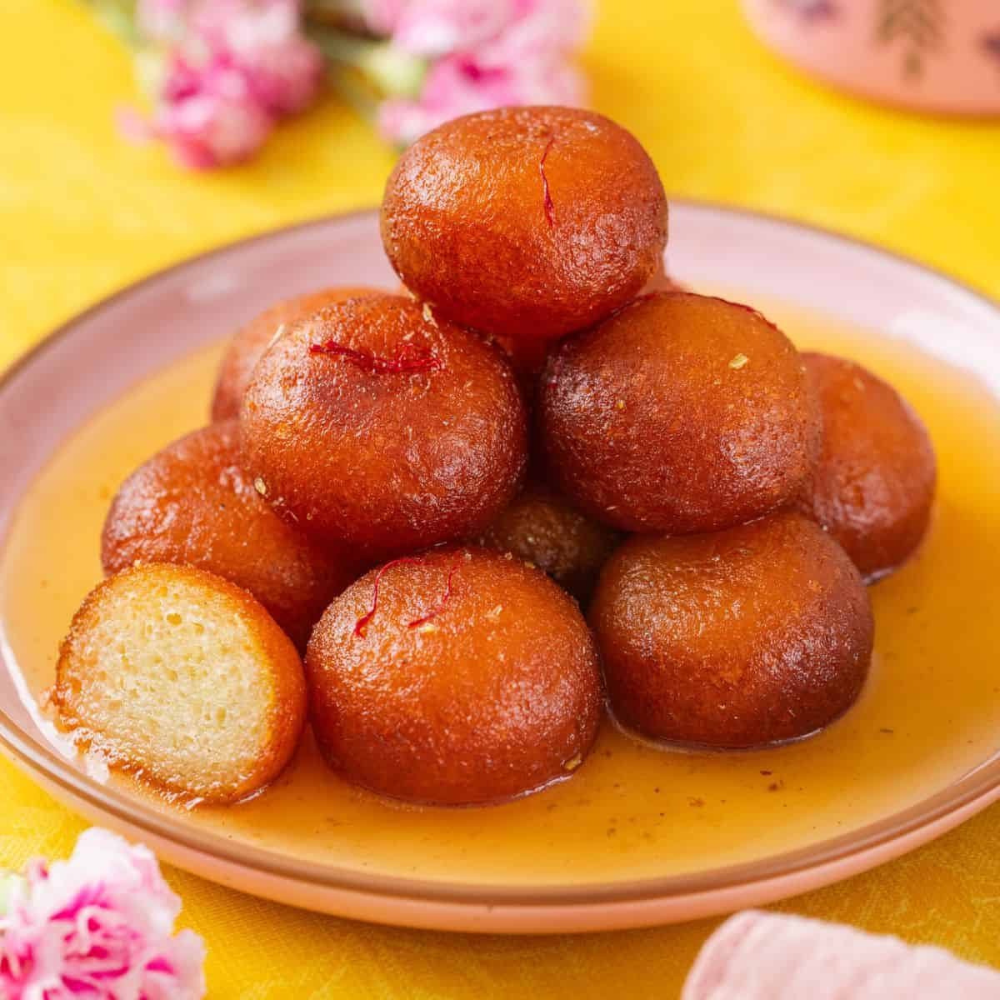
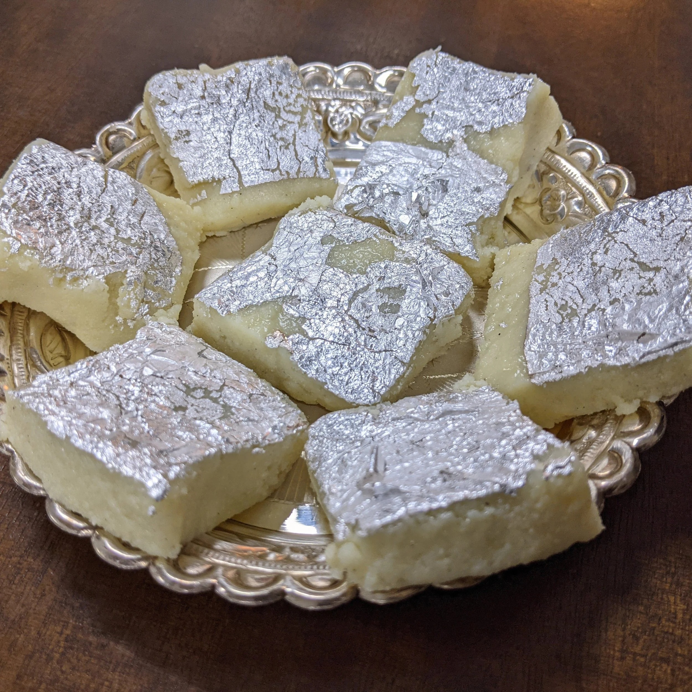
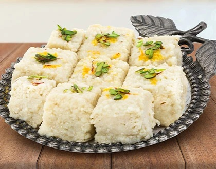
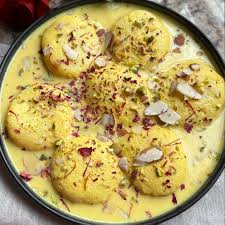

Gulab Jamun
Ingredients
- 1 cup milk powder
- 1/4 cup all-purpose flour (maida) and 1/4 tsp baking soda
- 2 tbsp ghee and milk as needed for dough
- 1½ cups sugar, 1½ cups water, and cardamom pods
Recipe
- Mix the dry ingredients with ghee and milk to make a soft dough.
- Boil sugar, water, and cardamom to prepare the syrup.
- Make small balls and deep fry on low flame until golden brown.
- Soak the fried jamuns in warm syrup and serve.

Barfi
Ingredients
- 2 cups milk powder
- 1 cup condensed milk
- 2 tbsp ghee and 1/2 tsp cardamom powder
- Chopped nuts for garnish
Recipe
- Heat ghee in a pan and add condensed milk and milk powder.
- Stir continuously on low flame until the mixture thickens.
- Spread the mixture on a greased tray and add chopped nuts.
- Let it cool, cut into pieces, and serve.

Kalakand
Ingredients
- 2 cups crumbled paneer
- 1 can condensed milk
- 1 tbsp ghee and 1/2 tsp cardamom powder
- Chopped pistachios or almonds for garnish
Recipe
- Heat ghee in a pan and add paneer and condensed milk.
- Cook on low flame while stirring until thick and grainy.
- Spread the mixture onto a greased tray and garnish with nuts.
- Let it cool, cut into pieces, and serve.

Rasmalai
Ingredients
- 1 liter milk and 2 tbsp lemon juice
- 1 cup sugar and 4 cups water
- 3 cups milk and 4 tbsp sugar for rabri
- Cardamom powder and chopped nuts for garnish
Recipe
- Boil milk, add lemon juice, and prepare soft chenna.
- Make small balls and cook them in sugar syrup until spongy.
- Boil milk with sugar and cardamom to make rabri.
- Add the balls to rabri, chill, and serve with nuts.
